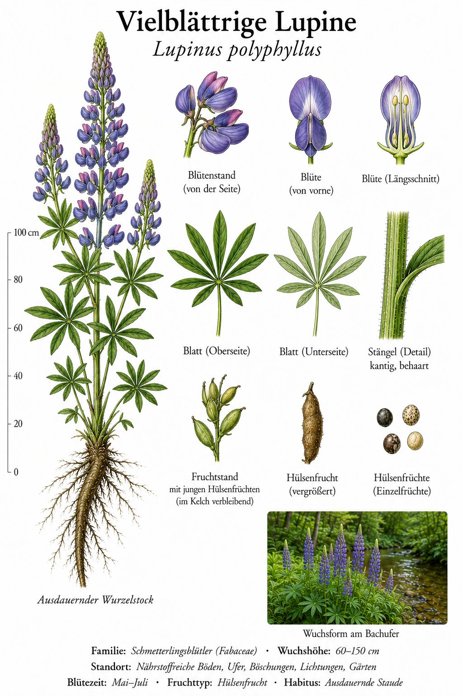
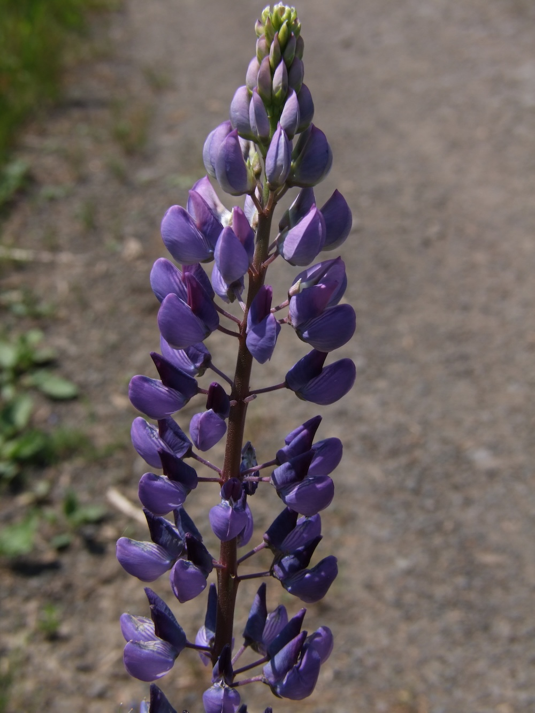

Garten-Flüchtling mit Folgen
Die Lupine kam im 19. Jahrhundert als Zier- und Futterpflanze aus Nordamerika nach Europa. Ihre auffälligen Blütensäulen (bis 50 cm hoch, in Blau, Rosa, Violett, Weiß) machten sie zu einer beliebten Garten-Pflanze. Aber: Sie hat sich verselbstständigt und ist heute in vielen Bergregionen Mitteleuropas eine problematische Neophytin — sie verdrängt heimische Arten und reichert den Boden mit Stickstoff an, was wiederum Magerrasen-Arten verdrängt.
Eiweiß-Wunder mit Bitterstoff-Falle
Lupinen-Samen sind extrem eiweißreich (bis 40 %) — daher ihr Comeback als Eiweißquelle in der menschlichen Ernährung („Lupinen-Burger“). Aber: Wildlupinen enthalten bittere und giftige Alkaloide. Für den Verzehr muss man spezielle „Süß-Lupinen“-Zuchtsorten verwenden. Niemals Wildlupinen-Samen essen!